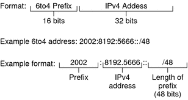
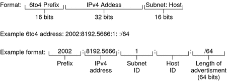

|
||||||||||||||||||||||||||||||||||||||||||
|
1. Solaris TCPIP Protocol Suite (Overview) 2. Planning an IPv4 Addressing Scheme (Tasks 3. Planning an IPv6 Addressing Scheme (Overview) 4. Planning an IPv6 Network (Tasks) 5. Configuring TCP/IP Network Services and IPv4 Addressing (Tasks) 6. Administering Network Interfaces (Tasks) 7. Enabling IPv6 on a Network (Tasks) 8. Administering a TCP/IP Network (Tasks) 9. Troubleshooting Network Problems (Tasks) 10. TCP/IP and IPv4 in Depth (Reference) Solaris 10 IPv6 Implementation IPv6 Neighbor Discovery Protocol IPv6 Extensions to Solaris Name Services 12. About Solaris DHCP (Overview) 13. Planning for DHCP Service (Tasks) 14. Configuring the DHCP Service (Tasks) 15. Administering DHCP (Tasks) 16. Configuring and Administering DHCP Clients 17. Troubleshooting DHCP (Reference) 18. DHCP Commands and Files (Reference) 19. IP Security Architecture (Overview) 21. IP Security Architecture (Reference) 22. Internet Key Exchange (Overview) 24. Internet Key Exchange (Reference) 25. Solaris IP Filter (Overview) 28. Administering Mobile IP (Tasks) 29. Mobile IP Files and Commands (Reference) 30. Introducing IPMP (Overview) 31. Administering IPMP (Tasks) Part VI IP Quality of Service (IPQoS) 32. Introducing IPQoS (Overview) 33. Planning for an IPQoS-Enabled Network (Tasks) 34. Creating the IPQoS Configuration File (Tasks) 35. Starting and Maintaining IPQoS (Tasks) 36. Using Flow Accounting and Statistics Gathering (Tasks) |
IPv6 Addressing Formats Beyond the BasicsChapter 3, Planning an IPv6 Addressing Scheme (Overview) introduces the most common IPv6 addressing formats: unicast site address and link-local address. This section includes in-depth explanations of addressing formats that are not covered in detail in Chapter 3, Planning an IPv6 Addressing Scheme (Overview): 6to4-Derived AddressesIf you plan to configure a 6to4 tunnel from a router or host endpoint, you must advertise the 6to4 site prefix in the /etc/inet/ndpd.conf file on the endpoint system. For an introduction and tasks for configuring 6to4 tunnels, refer to How to Configure a 6to4 Tunnel. The next figure shows the parts of a 6to4 site prefix. Figure 11-1 Parts of a 6to4 Site PrefixThe next figure shows the parts of a subnet prefix for a 6to4 site, such as you would include in the ndpd.conf file. Figure 11-2 Parts of a 6to4 Subnet PrefixThis table explains the parts of a 6to4 subnet prefix.
6to4-Derived Addressing on a HostWhen an IPv6 host receives the 6to4-derived prefix by way of a router advertisement, the host automatically reconfigures a 6to4-derived address on an interface. The address has the following format: prefix:IPv4-address:subnet-ID:interface-ID/64 The output from the ifconfig -a command on a host with a 6to4 interface might resemble the following: qfe1:3: flags=2180841<UP,RUNNING,MULTICAST,ADDRCONF,ROUTER,IPv6>
mtu 1500 index 7
inet6 2002:8192:56bb:9258:a00:20ff:fea9:4521/64 In this output, the 6to4-derived address follows inet6. This table explains the parts of the 6to4-derived address.
IPv6 Multicast Addresses in DepthThe IPv6 multicast address provides a method for distributing identical information or services to a defined group of interfaces, called the multicast group. Typically, the interfaces of the multicast group are on different nodes. An interface can belong to any number of multicast groups. Packets sent to the multicast address go to all members of the multicast group. For example, one use of multicast addresses is for broadcasting information, similar to the capability of the IPv4 broadcast address. The following table shows the format of the multicast address. Table 11-1 IPv6 Multicast Address Format
The following is a summary of the contents of each field.
For complete details about the multicast format, refer to RFC 3306, "Unicast-Prefix-based IPv6 Multicast Addresses. Some IPv6 multicast addresses are permanently assigned by the Internet Assigned Numbers Authority (IANA). Some examples are the All Nodes Multicast Addresses and All Routers Multicast Addresses that are required by all IPv6 hosts and IPv6 routers. IPv6 multicast addresses can also be dynamically allocated. For more information about the proper use of multicast addresses and groups, see RFC 3307, "Allocation Guidelines for IPv6 Multicast Addresses". |
|||||||||||||||||||||||||||||||||||||||||
|